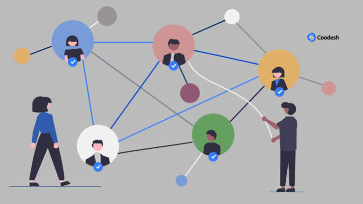

Recursos Humanos
A disciplina de Recursos Humanos O Recursos Humanos (RH) é a área responsável por gerenciar as pessoas de uma empresa, cuidando desde a contratação e o treinamento até a folha de pagamento e o plano de carreira. Seu principal foco é equilibrar as necessidades dos colaboradores com os objetivos da organização, garantindo um ambiente de trabalho motivador, produtivo e dentro das leis trabalhistas. Em suma, o RH cuida do capital humano para que a empresa funcione bem e continue crescendo.

A gestão moderna de Recursos Humanos vai muito além do trabalho burocrático do antigo departamento pessoal. Hoje, o RH atua estrategicamente para atrair, desenvolver e reter talentos, utilizando dados (People Analytics) para tomar decisões inteligentes sobre a equipe. Além de cuidar de treinamentos e planos de carreira, a área é responsável por cultivar uma cultura inclusiva e um bom clima de trabalho, alinhando o bem-estar dos colaboradores aos objetivos de crescimento da empresa.